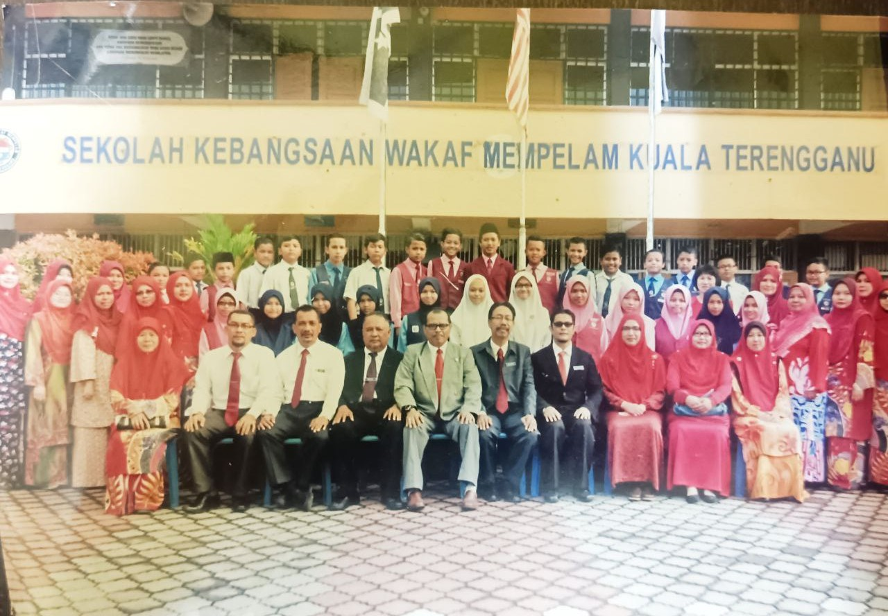
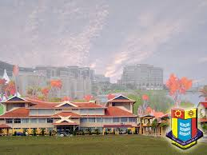

Education

Primary School
SEKOLAH KEBANGSAAN WAKAF MEMPELAM
2010 - 2016
At Sekolah Kebangsaan Wakaf Mempelam, which is located at Kuala Terengganu, I built a strong foundation in basic subjects such as reading, writing, and arithmetic. This period was crucial for developing social skills and a love for learning. Participated in various extracurricular activities including sports and arts.
| School Name | SEKOLAH KEBANGSAAN WAKAF MEMPELAM |
|---|---|
| Address | Km 13 Jalan Kuala Berang 20050 Kuala Terengganu Terengganu |
| Phone | 096227211 |
| TBA3023@moe.edu.my |

High School
SMK SERI NILAM
2017 - 2021
At Smk Seri Nilam, located at Jalan Kubang Tangga, Kuala Terengganu, I expanded my academic and extracurricular horizons. Engaged in advanced courses in mathematics, sciences, and humanities while participating in various clubs, such as the debate team and the science club. Achieved high academic honors and developed leadership skills by serving as the head prefect.
| School Name | SEKOLAH MENENGAH KEBANGSAAN SERI NILAM |
|---|---|
| Address | Jalan Kubang Tangga 20050 Kuala Terengganu Terengganu |
| Phone | 096301700 |
| TEA3123@moe.edu.my |

Diploma in Library Informatics
UNIVERSITY TECHNOLOGY MARA (UITM) CAWANGAN KEDAH
2022 - CURRENT
At University Technology Mara (UITM), I pursued a Diploma in Library Informatics, specializing in library management system and data structures. Engaged in collaborative assignments that honed my technical and problem-solving skills. Actively participated in the university's tech club and organized coding bootcamps for fellow students.Universiti Teknologi MARA (UiTM) Kedah Branch is committed to supporting UiTM's aspiration to become a Globally Renowned University by the year 2025. UiTM Kedah Branch aims to achieve excellence not only in academics and research but also in volunteerism and entrepreneurship.
| Institution name | UNIVERSITI TEKNOLOGI MARA (UITM) CAWANGAN KEDAH |
|---|---|
| Address | P.O Box 10708400 Merbok Kedah. |
| Phone | 04-4562211 |
| korporatkdh@uitm.edu.my |